88. 人工智能主体中作为交换媒介的货币#
88.1. 概览#
Kiyotaki 和 Wright [Kiyotaki and Wright, 1989] 研究了一个不存在需求双重巧合的经济。
只有当某种商品被接受不是因为它被需要，而是因为它可以在以后被转手时，交易才能发生。
扮演这种角色的商品就是交换媒介。
Kiyotaki 和 Wright 在假设主体完全理性——主体知道其交易伙伴之间商品的分布并对此做出最优反应——的前提下，刻画了这种经济的平稳纳什均衡。
Marimon、McGrattan 和 Sargent [Marimon et al., 1990] 提出了一个不同的问题。
假设我们彻底抛弃理性假设，取而代之的是一群人工智能主体，他们最初遵循任意的、甚至是随机的经验法则，并且仅仅通过记录过去哪些法则奏效来调整这些法则。
这样的主体会学会使用交换媒介吗？
而当理性预期模型存在多个均衡时，如果确实会出现某个均衡，那会是哪一个？
Marimon、McGrattan 和 Sargent 使用的学习装置是 John Holland 的分类器系统 [Holland, 1975, Holland et al., 1986]：一个由“如果-那么”规则组成的种群、一个决定哪条规则起作用的拍卖机制，以及一个对导致良好结果的规则记入贷方、对导致不良结果的规则记入借方的记账系统。
作为一个可选项，遗传算法会繁育新规则并淘汰旧规则。
本讲重建了他们的计算实验。
我们将复现的主要发现是：
从强度相等的规则的完全枚举开始，甚至从随机生成的规则开始，持有量和交易模式都会收敛到 Kiyotaki-Wright 模型的一个平稳纳什均衡。
当 Kiyotaki-Wright 模型同时存在基本均衡与投机均衡时，人工智能主体会选择基本均衡——即储藏成本最低的商品充当货币流通的那个均衡。
一种本质上毫无价值、储藏无成本的物品——法定货币——会被必须自己发现其用处的主体在交易中接受。
同样的机制在一个有五种商品和五种类型的经济中也能奏效，而作者对此经济的均衡并没有解析刻画：该算法被用作均衡发现装置。
让我们从一些导入开始。
import numpy as np
import pandas as pd
import matplotlib.pyplot as plt
from dataclasses import dataclass
88.2. Kiyotaki-Wright 环境#
存在三种类型的主体，用 \(i = 1, 2, 3\) 索引，以及三种商品，用 \(k = 1, 2, 3\) 索引。
类型 \(i\) 的主体只从消费商品 \(i\) 中获得效用。
他拥有生产商品 \(i^*\) 的技术，其中 \(i^* \neq i\)。
在 Kiyotaki 和 Wright 的模型 A 中，生产模式是“维克塞尔三角”
类型 \(i\) |
生产 \(i^*\) |
消费 |
|---|---|---|
1 |
2 |
1 |
2 |
3 |
2 |
3 |
1 |
3 |
因此不存在需求的双重巧合：拥有你想要的东西的主体从不想要你拥有的东西。
所有商品都是不可分的，每个主体从一期到下一期恰好能储藏一单位恰好一种商品。
储藏商品 \(k\) 一期的成本为 \(s_k\)，且
每种类型有相等数量 \(A_i\) 的主体，因此总数为 \(A = 3 A_i\)。
每期每个主体都会被随机配对到恰好一个其他主体，不考虑类型。
记 \(x_{at}\) 为主体 \(a\) 在 \(t\) 期携带的商品，\(\rho_t(a)\) 为与 \(a\) 配对的主体。
主体 \(a\) 的交易前状态是一对
每期每个主体依次做出两个决策。
第一，在看到 \(z_{at}\) 之后，他决定是否提出交易，
当且仅当 \(\lambda_{at} \lambda_{\rho_t(a)t} = 1\) 时交易才会发生，因此交易后的持有量为
第二，他决定是否消费他手中留下的东西，
如果他消费，他会立即生产商品 \(f(a) = i^*\)，并将其带入 \(t+1\)。
因此
单期净收益为
其中当 \(k = i\) 时 \(u_i(k) = u_i > 0\)，否则 \(u_i(k) = 0\)。
请注意，主体可以消费他不想要的商品；他只是从中获得零效用，同时仍然要生产并支付储藏 \(f(a)\) 的费用。
不消费也不是免费的——它花费 \(s(x^+_{at})\)。
学习该做哪一种是问题的一部分。
备注
Kiyotaki 和 Wright 按照预期贴现效用对收益流进行排序。
Marimon、McGrattan 和 Sargent 则假设每个主体关心他的长期平均效用。
这一点很重要：正如我们将看到的，这正是分类器系统内部的记账系统是由滚动平均值构建的原因。
88.2.1. 两个均衡#
由于主体的收益取决于其他主体的行为，该模型可以存在多个平稳均衡。
Kiyotaki 和 Wright 用一组概率来刻画均衡，其中对我们最有用的是
在基本均衡中，商品 1——储藏成本最低的商品——成为普遍的交换媒介：
类型 1 主体总是持有商品 2（他们自己生产的），并用其交换商品 1；
类型 3 主体总是持有商品 1，并用其交换商品 3；
类型 2 主体一半时间持有商品 1，一半时间持有商品 3。
所以均衡持有概率为
\(k=1\) |
\(k=2\) |
\(k=3\) |
|
|---|---|---|---|
\(i=1\) |
0 |
1 |
0 |
\(i=2\) |
0.5 |
0 |
0.5 |
\(i=3\) |
1 |
0 |
0 |
类型 2 主体接受商品 1，即使他们从不消费它：他们把它当作货币使用。
在投机均衡中，类型 1 主体还额外接受商品 3——储藏成本最高的商品——因为他们预期能很快将其换成商品 1。
Kiyotaki 和 Wright 证明，在贴现率趋于零的极限下，如果
基本均衡是唯一的平稳均衡；而当不等式反向时，投机均衡是唯一的均衡。
因此，只要将 \(u_1\) 提高到足够程度，就能使模型的预测从基本均衡转变为投机均衡。
下面的经济体 A2 恰恰做到了这一点，这是检验适应性主体能否跟踪理性预期预测的良好测试。
88.3. 分类器系统#
主体并不被赋予一个策略。
他被赋予的是一群候选规则以及一种记分方法。
分类器是三元字母表 \(\{0, 1, \#\}\) 中的一个字符串，被分为条件部分和动作部分，其中 \(\#\) 表示“无所谓”。
[Goldberg, 1989] 是一本关于分类器系统与遗传算法的专著。
商品用二进制编码，条件用三进制编码，因此对于三种商品，两个位置就足够了：
编码 |
含义 |
|---|---|
|
商品 1 |
|
商品 2 |
|
商品 3 |
|
不是商品 1 |
|
不是商品 2 |
|
任何商品 |
交换分类器是一个长度为 7 的字符串：两个位置表示自己的持有物，两个位置表示伙伴的持有物，最后一个二进制数字表示动作（\(1\) = 提议交易，\(0\) = 拒绝）。
例如
1 0 0 0 1 -> 1 "如果我持有商品1，我的伙伴持有商品3，则提议交易"
1 0 # # -> 0 "如果我持有商品1，拒绝与任何人交易"
共有 \(6 \times 6 \times 2 = 72\) 种不同的交换分类器，这是状态 \(z_{at}\) 上可定义的所有规则的完全枚举。
消费分类器是一个长度为 4 的字符串：两个位置表示交易后的持有量 \(x^+_{at}\)，一个动作数字（\(1\) = 消费）。
这样的分类器共有 \(6 \times 2 = 12\) 个。
88.3.1. 拍卖#
日期 \(t\) 时附加在分类器 \(e\) 上的是一个强度 \(S^a_e(t)\)。
给定状态 \(z_{at}\)，令
为条件被满足的分类器集合。
起作用的分类器是最强的匹配分类器，
消费分类器也以同样的方式从 \(M_c(z_{at})\) 中选出。
88.3.2. 消桶传递法#
强度通过一个 Holland 称之为消桶传递法的内部支付系统进行更新。
只有赢得拍卖的分类器才会改变其强度，因此我们为每个分类器附加一个计数器 \(\tau^a_e(t)\)，记录它到 \(t\) 为止赢得拍卖的次数，初始值为 1。
一个匹配的分类器 \(e\) 会投出其强度中的以下比例
作为出价，对消费分类器同样有 \(b_2(c) = b_{21} + b_{22}\sigma_c\)。
由于 \(\sigma_e\) 随特殊性增加而升高，在强度相等的情况下，特定规则会压过泛化规则。
支付按以下方式流动。
外部收益 \(U_a(\gamma_t)\) 支付给 \(t\) 时获胜的消费分类器。
\(t\) 时获胜的消费分类器将其出价支付给 \(t\) 时获胜的交换分类器，因为后者创造了使其得以行动的状态。
\(t\) 时获胜的交换分类器将其出价支付给 \(t-1\) 时获胜的消费分类器，因为后者建立了状态 \(z_{at}\)。
正是这条链将消费所获得的奖励反向传递给使消费成为可能的交易。
由此产生的运动法则为
其中 \(I^a_e(t)\) 和 \(I^a_c(t)\) 是赢得 \(t\) 时拍卖的指示变量。
(88.6) 中的时序值得仔细研读，因为它正是跨期传递奖励的方式。
在日期 \(t\) 更新的消费分类器是在 \(t-1\) 时获胜的那一个：它收集自己决策所赚取的外部收益，还收集来自现在获胜的交换分类器的出价 \(b_1(e)S_e\)，因为正是它创造了后者行动的机会。
而交换分类器则在当期由随后的消费分类器支付。
因此每笔出价都沿着这条链
向后传递一步，消费时收取的收益就这样一环一环地反向渗透，回到使其成为可能的交易那里。
提出交易但未得到回应的交换分类器不会被扣费，其计数器也不会前进：主体从被拒绝的提议中学不到任何东西。
备注
方程 (88.6)-(88.7) 使强度成为过去净收入的累积平均值而非累积总量，而后者正是 Holland 最初规范所使用的。
这正是使强度收敛的创新之处。
由于增益为 \(1/\tau\)，这些是随机逼近递归式，因此任何极限点都必须满足
Marimon、McGrattan 和 Sargent 将满足这些方程的一组强度定义为平稳的，并将在平稳强度下赢得拍卖的规则恰好是支持均衡行为的规则的情形定义为受支持的平稳纳什均衡。
正如论文中一样，给定类型的所有主体共享一个分类器系统；这在节省计算量的同时，使得所有类型 \(i\) 的主体同时进行实验。
88.4. 实现#
我们将分类器种群存储为一组并行的 NumPy 数组，而不是对象列表，这使我们能够通过单次向量化比较找到所有匹配的规则。
通配符 \(\#\) 用 \(-1\) 表示。
WILD = -1
# binary codes for goods, one row per good
CODES = {
3: np.array([[1, 0], [0, 1], [0, 0]]),
4: np.array([[1, 0], [0, 1], [0, 0], [1, 1]]), # good 4 = fiat money
5: np.array([[1, 0, 0], [0, 1, 0], [0, 0, 1],
[1, 1, 0], [1, 0, 1]]),
}
# the six conditions expressible with two trits (see the table above)
CONDS_2 = np.array([[1, 0], [0, 1], [0, 0],
[0, WILD], [WILD, 0], [WILD, WILD]])
def rule_string(cond, action):
"Print a classifier the way the paper does."
body = ''.join('#' if b == WILD else str(int(b)) for b in cond)
return f"{body} -> {int(action)}"
class Rules:
"""
A population of classifiers held as parallel arrays.
cond[i] condition part of rule i, entries in {0, 1, WILD}
action[i] action part of rule i, in {0, 1}
strength[i] S_i, a running average of net receipts
used[i] the counter tau_i, initialized at 1
traded[i] number of times rule i actually executed a trade
"""
def __init__(self, cond, action, strength=None):
self.cond = np.asarray(cond, dtype=np.int64)
self.action = np.asarray(action, dtype=np.int64)
n = len(self.action)
self.strength = (np.zeros(n) if strength is None
else np.asarray(strength, float).copy())
self.used = np.ones(n, dtype=np.int64)
self.traded = np.zeros(n, dtype=np.int64)
@property
def n(self):
return len(self.action)
@property
def length(self):
return self.cond.shape[1]
def matched(self, state):
"Boolean mask of rules whose condition is satisfied by state."
return np.all((self.cond == WILD) | (self.cond == state), axis=1)
def specificity(self, i):
"sigma_i = 1 / (1 + number of wildcards)."
return 1.0 / (1.0 + np.count_nonzero(self.cond[i] == WILD))
def replace(self, i, cond, action, strength, used=1, traded=0):
"Overwrite rule i."
self.cond[i] = cond
self.action[i] = action
self.strength[i] = strength
self.used[i] = used
self.traded[i] = traded
完全枚举将每个条件与两个动作配对。
随机种群则均匀地抽取条件和动作，这就是不完全枚举经济体的初始方式。
def complete_rules(pair):
"All two-trit rules; pair=True for exchange rules, False for consumption rules."
if pair:
conds = np.array([np.concatenate([a, b])
for a in CONDS_2 for b in CONDS_2])
else:
conds = CONDS_2.copy()
return Rules(np.repeat(conds, 2, axis=0), np.tile([0, 1], len(conds)))
def random_rules(n, length, rng):
return Rules(rng.integers(-1, 2, size=(n, length)),
rng.integers(0, 2, size=n),
rng.random(n) * 0.1)
拍卖 (88.5) 挑选最强的匹配规则，平局时按位置打破。
def auction(rules, state):
"Index of the strongest rule matching state, or -1 if none matches."
idx = np.flatnonzero(rules.matched(state))
if idx.size == 0:
return -1, idx
return idx[np.argmax(rules.strength[idx])], idx
即使没有遗传算法，也需要两个算子。
创造在当前状态完全没有规则匹配时触发：一个冗余或较弱的规则会被一个条件恰好等于刚观察到的状态的规则覆盖，动作随机抽取。
多样化在所有匹配规则都要求相同动作时触发：会种入一条动作相反的规则，以便可以尝试并评分这一替代选项。
两者都保持种群规模不变。
def create(rules, state, rng):
"No rule matches state, so overwrite the weakest of the most redundant rules."
groups = {}
for i in range(rules.n):
groups.setdefault(tuple(rules.cond[i]), []).append(i)
biggest = max(groups.values(), key=len)
group = biggest if len(biggest) > 1 else range(rules.n)
j = min(group, key=lambda i: rules.strength[i])
rules.replace(j, state, rng.integers(0, 2), rules.strength.mean())
return j
def diversify_simple(rules, matches):
"If every matched rule takes the same action, plant the opposite action."
if len(set(rules.action[matches])) > 1:
return
weak = matches[np.argmin(rules.strength[matches])]
rules.replace(weak, rules.cond[weak], 1 - rules.action[matches[0]],
rules.strength[matches].mean())
88.4.1. 描述一个经济体#
Economy 将物理环境的参数与学习算法的设置一起收集起来。
字段 method 从论文使用的三种方案中选择一种：
'enumerate'—— 从强度全为零的完全枚举规则开始，不使用遗传算法；'ga3'—— 从随机规则开始，用单点交叉和变异来演化；'ga4'—— 从随机规则开始，用一种泛化交叉来演化，用于最大的经济体。
如果存在法定货币，它是最后一种商品：储藏成本为零，不带来效用，且不能被消费。
@dataclass
class Economy:
name: str
produces: np.ndarray # produces[i] = good produced by type i
storage_costs: np.ndarray # one entry per good
u: float = 100.0 # utility from own consumption good
n_agents_per_type: int = 50
method: str = 'enumerate' # 'enumerate' | 'ga3' | 'ga4'
n_trade_rules: int = 72
n_consume_rules: int = 12
b_trade: tuple = (0.025, 0.025) # (b11, b12)
b_consume: tuple = (0.25, 0.25) # (b21, b22)
n_fiat: int = 0 # units of fiat money injected at t = 0
start: str = 'random' # initial holdings: 'random' | 'production'
pcross: float = 0.6
pmutation: float = 0.01
@property
def n_types(self):
return len(self.produces)
@property
def n_goods(self):
return len(self.storage_costs)
@property
def n_agents(self):
return self.n_types * self.n_agents_per_type
@property
def fiat(self):
return self.n_goods > self.n_types
@property
def n_bits(self):
return CODES[self.n_goods].shape[1]
def code(self, good):
return CODES[self.n_goods][good]
88.4.2. 主体#
Agent 代表一种类型：它拥有一个交换规则种群和一个消费规则种群，并记住上一期哪条消费规则获胜，以便这一期的交换规则能够对它进行支付。
class Agent:
def __init__(self, i, econ, rng):
self.i, self.econ, self.rng = i, econ, rng
if econ.method == 'enumerate':
self.trade = complete_rules(pair=True)
self.consume = complete_rules(pair=False)
else:
self.trade = random_rules(econ.n_trade_rules, 2 * econ.n_bits, rng)
self.consume = random_rules(econ.n_consume_rules, econ.n_bits, rng)
self.pending = None # last period's consumption rule, awaiting settlement
def decide(self, rules, state, specialize=False):
"Run the auction on `state`, applying the operators the method calls for."
win, matches = auction(rules, state)
if win < 0: # creation
j = create(rules, state, self.rng)
return rules.action[j], j
if self.econ.method == 'enumerate':
diversify_simple(rules, matches)
elif self.econ.method == 'ga4':
diversify_clone(rules, matches, win)
if specialize:
specialize_winner(rules, win, self.econ.pmutation, self.rng)
if self.econ.method != 'ga3':
win, matches = auction(rules, state) # the population may have changed
return rules.action[win], win
def trade_decision(self, own, partner, specialize=False):
state = np.concatenate([self.econ.code(own), self.econ.code(partner)])
return self.decide(self.trade, state, specialize)
def consume_decision(self, good, specialize=False):
return self.decide(self.consume, self.econ.code(good), specialize)
def update(self, e, c, payoff, active):
"""
The bucket brigade laws of motion for strengths.
`e` and `c` index the winning exchange and consumption rules and `active`
records whether the exchange rule's action was actually carried out.
"""
b11, b12 = self.econ.b_trade
b21, b22 = self.econ.b_consume
T, C = self.trade, self.consume
b1 = b11 + b12 * T.specificity(e)
b2 = b21 + b22 * C.specificity(c)
if active: # exchange rule: pays b1, receives b2 * S_c
τ = T.used[e]
T.used[e] += 1
T.traded[e] += int(T.action[e] == 1)
T.strength[e] -= ((1 + b1) * T.strength[e] - b2 * C.strength[c]) / τ
# Now settle last period's consumption rule. Its update waits a period
# because only now is the second of its two receipts known: it collects
# the payoff its own decision earned *and* the bid of the exchange rule
# winning today, whose chance to act it created.
if self.pending is not None:
p, u_prev = self.pending
inflow = b1 * T.strength[e] if active else 0.0
b2p = b21 + b22 * C.specificity(p)
tau_p = C.used[p]
C.used[p] += 1
C.strength[p] -= ((1 + b2p) * C.strength[p] - inflow - u_prev) / tau_p
self.pending = (c, payoff)
88.4.3. 模拟#
每一期，所有 \(A\) 个主体被打乱并配成 \(A/2\) 对；每对进行交易、消费和强度更新；然后，在不完全枚举经济体中，遗传算子运行。
作者代码中存在的对交换强度的小额比例性征税，可以防止强度永久锁定。
class Simulation:
def __init__(self, econ, seed=0):
self.econ = econ
self.rng = np.random.default_rng(seed)
self.agents = [Agent(i, econ, self.rng) for i in range(econ.n_types)]
self.types = np.repeat(np.arange(econ.n_types), econ.n_agents_per_type)
if econ.start == 'random':
self.holdings = self.rng.integers(0, econ.n_types, size=econ.n_agents)
else:
self.holdings = econ.produces[self.types].copy()
if econ.n_fiat:
who = self.rng.choice(econ.n_agents, size=econ.n_fiat, replace=False)
self.holdings[who] = econ.n_goods - 1
self.hold_hist, self.exch_hist, self.cons_hist = [], [], []
self.trades, self.eaten = [], []
def run(self, T, verbose=False):
econ, rng = self.econ, self.rng
evolving = econ.method != 'enumerate'
if evolving:
# the genetic algorithm fires on even dates with probability 1/sqrt(t/2)
p = 1.0 / np.sqrt(np.arange(1, T // 2 + 1))
even = np.arange(1, T, 2)
ga_dates = np.zeros(T, dtype=bool)
ga_dates[even] = p[:len(even)] > rng.random(len(even))
spec_dates = np.zeros(T, dtype=bool)
spec_dates[even] = p[:len(even)] > rng.random(len(even))
for t in range(1, T + 1):
spec = evolving and econ.method == 'ga4' and spec_dates[t - 1]
n_trades = n_eaten = 0
exch = np.zeros((econ.n_types, econ.n_goods, econ.n_goods))
cons = np.zeros((econ.n_types, econ.n_goods, 2))
order = rng.permutation(econ.n_agents)
for k in range(econ.n_agents // 2):
a, b = order[2 * k], order[2 * k + 1]
ia, ib = self.types[a], self.types[b]
ga, gb = self.holdings[a], self.holdings[b]
A, B = self.agents[ia], self.agents[ib]
# --- exchange ---
la, ea = A.trade_decision(ga, gb, spec)
lb, eb = B.trade_decision(gb, ga, spec)
swap = (la == 1) and (lb == 1)
if swap:
self.holdings[a], self.holdings[b] = gb, ga
n_trades += 1
exch[ia, ga, gb] += 1
exch[ib, gb, ga] += 1
# --- consumption ---
pa, pb = self.holdings[a], self.holdings[b]
ca, wa = A.consume_decision(pa, spec)
cb, wb = B.consume_decision(pb, spec)
cons[ia, pa, 0] += 1
cons[ib, pb, 0] += 1
ua = self.consume_and_produce(a, ia, pa, ca)
if ca == 1:
cons[ia, pa, 1] += 1
n_eaten += pa == ia
ub = self.consume_and_produce(b, ib, pb, cb)
if cb == 1:
cons[ib, pb, 1] += 1
n_eaten += pb == ib
# --- accounting ---
A.update(ea, wa, ua, swap or la == 0)
B.update(eb, wb, ub, swap or lb == 0)
if evolving:
if ga_dates[t - 1]:
self.evolve()
if econ.method == 'ga3':
for A in self.agents:
specialize_all(A.trade, t, rng)
specialize_all(A.consume, t, rng)
self.tax()
self.hold_hist.append(self.distribution())
self.exch_hist.append(exch)
self.cons_hist.append(cons)
self.trades.append(n_trades)
self.eaten.append(n_eaten)
if verbose and t % max(1, T // 10) == 0:
print(f" period {t:5d}: trades = {n_trades:3d},"
f" consumptions = {n_eaten:3d}")
def consume_and_produce(self, a, i, good, action):
"""
Carry out the consumption decision and return the external payoff.
Consuming fiat money is not allowed. If the agent does consume, he
immediately produces his own good, so this updates his holding.
"""
econ = self.econ
if action == 1 and not (econ.fiat and good == econ.n_goods - 1):
new = econ.produces[i]
self.holdings[a] = new
u = econ.u if good == i else 0.0
return u - econ.storage_costs[new]
return -econ.storage_costs[good]
def distribution(self):
"The matrix of holding frequencies pi^h_it(k)."
econ = self.econ
d = np.zeros((econ.n_types, econ.n_goods))
for i in range(econ.n_types):
h = self.holdings[self.types == i]
for k in range(econ.n_goods):
d[i, k] = np.mean(h == k)
return d
def tax(self):
if self.econ.method == 'ga4':
for A in self.agents:
T, C = A.trade, A.consume
P = np.where(T.action == 1, T.traded, T.used) + 1
T.strength -= (T.strength + 1.0) / P
C.strength -= (C.strength + 1.0) / (C.used + 1)
else:
for A in self.agents:
A.trade.strength -= 1e-4 * np.abs(A.trade.strength)
def pick_types(self):
"Send one type to the genetic algorithm, a second and a third each w.p. 0.33."
rng, n = self.rng, self.econ.n_types
chosen = [int(rng.integers(n))]
rest = [i for i in range(n) if i not in chosen]
while rest and len(chosen) < 3 and rng.random() < 0.33:
pick = rest[int(rng.integers(len(rest)))]
chosen.append(pick)
rest.remove(pick)
return chosen
def evolve(self):
econ = self.econ
gen = econ.method == 'ga4'
for i in self.pick_types():
genetic_algorithm(self.agents[i].trade, self.rng, generalize=gen,
pcross=econ.pcross, pmutation=econ.pmutation,
crowd_factor=8)
for i in self.pick_types():
genetic_algorithm(self.agents[i].consume, self.rng, generalize=gen,
pcross=econ.pcross, pmutation=econ.pmutation,
crowd_factor=4)
备注
Agent 和 Simulation 引用了四个函数——genetic_algorithm、specialize_all、
diversify_clone 和 specialize_winner——这些函数属于遗传算法，因此延后到下面的
遗传算法 中介绍，在那里可以通过它们所解决的问题来阐明其动机。
延后介绍它们没有任何代价。
Python 在函数运行时才查找名称，而不是在定义时，我们首先研究的完全枚举经济体从不调用这四个函数中的任何一个。
倾向于先看到机制再看到它的使用的读者，可以先运行该部分的代码单元格。
88.4.4. 报告#
以下辅助函数将模拟输出整理成论文表格的格式。
我们遵循论文的做法，报告十期移动平均值。
def good_names(econ):
names = [f"good {k+1}" for k in range(econ.n_types)]
return names + ["fiat"] if econ.fiat else names
def type_names(econ):
return [f"type {i+1}" for i in range(econ.n_types)]
def holdings(sim, t=None, window=10):
r"Table of $\pi^h_{it}(j)$, averaged over the `window` periods ending at `t`."
h = np.array(sim.hold_hist)
t = len(h) if t is None else t
d = h[max(0, t - window):t].mean(axis=0)
return pd.DataFrame(d, index=type_names(sim.econ),
columns=good_names(sim.econ)).round(3)
def exchanges(sim, t=None, window=10):
r"""
Table of $\pi^e_{it}(jk)$: the frequency with which a type $i$ agent holds
good $j$, meets an agent holding good $k$, and trades. Row $j$ of column
$i$ holds the triple over $k$.
"""
econ = sim.econ
e = np.array(sim.exch_hist)
t = len(e) if t is None else t
f = e[max(0, t - window):t].mean(axis=0) / econ.n_agents_per_type
cols = {type_names(econ)[i]:
["(" + ", ".join(f"{f[i, j, k]:.2f}" for k in range(econ.n_goods)) + ")"
for j in range(econ.n_goods)]
for i in range(econ.n_types)}
return pd.DataFrame(cols, index=good_names(econ)).T
def winning_actions(sim):
r"""
Table of $\tilde\pi^e_{it}(jk|j)$: the action chosen by the winning exchange
rule in each state, whether or not that state is ever visited.
"""
econ = sim.econ
cols = {}
for i, A in enumerate(sim.agents):
col = []
for j in range(econ.n_goods):
acts = []
for k in range(econ.n_goods):
w, _ = auction(A.trade, np.concatenate([econ.code(j), econ.code(k)]))
acts.append('-' if w < 0 else str(int(A.trade.action[w])))
col.append("(" + ",".join(acts) + ")")
cols[type_names(econ)[i]] = col
return pd.DataFrame(cols, index=good_names(econ)).T
def consume_actions(sim):
r"Table of the winning consumption action for each post-trade holding."
econ = sim.econ
cols = {}
for i, A in enumerate(sim.agents):
col = []
for j in range(econ.n_goods):
w, _ = auction(A.consume, econ.code(j))
col.append('-' if w < 0 else int(A.consume.action[w]))
cols[type_names(econ)[i]] = col
return pd.DataFrame(cols, index=good_names(econ)).T
def strongest(rules, n=5):
"The n highest-strength classifiers in a population."
order = np.argsort(-rules.strength)[:n]
return pd.DataFrame({
'classifier': [rule_string(rules.cond[i], rules.action[i]) for i in order],
'strength': rules.strength[order].round(2),
'times used': rules.used[order]})
两幅图：持有量的时间路径，对应于论文的图 6-9；以及系统所发现的交易模式图，对应于其图 2、4、9 和 11。
def plot_holdings(sim, title=None):
econ = sim.econ
h = np.array(sim.hold_hist)
names = good_names(econ)
fig, axes = plt.subplots(1, econ.n_types,
figsize=(3.2 * econ.n_types, 3.2), sharey=True)
axes = np.atleast_1d(axes)
for i, ax in enumerate(axes):
for k in range(econ.n_goods):
ax.plot(h[:, i, k], lw=1.0, label=names[k])
ax.set_title(f"type {i+1}")
ax.set_xlabel("$t$")
ax.set_ylim(-0.03, 1.03)
axes[0].set_ylabel(r"$\pi^h_{it}(j)$")
axes[-1].legend(frameon=False, fontsize=8, loc='center right')
if title:
fig.suptitle(title)
plt.tight_layout()
plt.show()
def plot_flows(sim, window=100, cutoff=0.02, title=None):
"""
One panel per type. An arrow from good j to good k means that agents of that
type give up j and receive k in trade; its width is the frequency with which
that exchange occurs over the last `window` periods.
"""
econ = sim.econ
f = np.array(sim.exch_hist)[-window:].mean(axis=0) / econ.n_agents_per_type
names, n = good_names(econ), econ.n_goods
ang = np.pi / 2 + 2 * np.pi * np.arange(n) / n
xy = np.column_stack([np.cos(ang), np.sin(ang)])
fig, axes = plt.subplots(1, econ.n_types, figsize=(2.9 * econ.n_types, 3.1))
axes = np.atleast_1d(axes)
for i, ax in enumerate(axes):
for k in range(n):
ax.plot(*xy[k], 'o', ms=22, mfc='white', mec='black', zorder=2)
ax.annotate(names[k].replace(' ', '\n'), xy[k], ha='center',
va='center', fontsize=6.5, zorder=3)
for j in range(n):
for k in range(n):
if j == k or f[i, j, k] < cutoff:
continue
a, b = xy[j], xy[k]
d = b - a
ax.annotate("", xy=b - 0.24 * d, xytext=a + 0.24 * d, zorder=1,
arrowprops=dict(arrowstyle="-|>", color="C0",
lw=1 + 8 * f[i, j, k], alpha=0.7,
connectionstyle="arc3,rad=0.15"))
ax.set_title(f"type {i+1}", fontsize=10)
ax.set_xlim(-1.45, 1.45)
ax.set_ylim(-1.45, 1.45)
ax.set_aspect('equal')
ax.axis('off')
if title:
fig.suptitle(title)
plt.tight_layout()
plt.show()
88.5. 经济体 A1.1：交换媒介会出现吗？#
我们的第一个经济体是维克塞尔三角，其参数为
每种类型五十个主体，并对 72 个交换分类器和 12 个消费分类器进行完全枚举，全部强度为零。
由于所有强度最初都相等，最初的拍卖获胜者实际上是任意的：主体一开始不知道该做什么。
条件 (88.4) 在这里很容易满足，因此基本均衡是 Kiyotaki-Wright 的预测。
economy_a11 = Economy(
name='A1.1',
produces=np.array([1, 2, 0]), # type 1 -> good 2, etc. (0-indexed)
storage_costs=np.array([0.1, 1.0, 20.0]),
u=100.0,
method='enumerate',
)
sim_a11 = Simulation(economy_a11, seed=42)
sim_a11.run(1000, verbose=True)
period 100: trades = 19, consumptions = 27
period 200: trades = 29, consumptions = 41
period 300: trades = 21, consumptions = 26
period 400: trades = 19, consumptions = 22
period 500: trades = 17, consumptions = 24
period 600: trades = 19, consumptions = 27
period 700: trades = 15, consumptions = 19
period 800: trades = 16, consumptions = 18
period 900: trades = 16, consumptions = 21
period 1000: trades = 22, consumptions = 29
以下是 \(t = 500\) 和 \(t = 1000\) 时的持有量。
holdings(sim_a11, t=500)
| good 1 | good 2 | good 3 | |
|---|---|---|---|
| type 1 | 0.000 | 1.0 | 0.000 |
| type 2 | 0.522 | 0.0 | 0.478 |
| type 3 | 1.000 | 0.0 | 0.000 |
holdings(sim_a11)
| good 1 | good 2 | good 3 | |
|---|---|---|---|
| type 1 | 0.00 | 1.0 | 0.00 |
| type 2 | 0.53 | 0.0 | 0.47 |
| type 3 | 1.00 | 0.0 | 0.00 |
将这些与上面列出的基本均衡进行比较：类型 1 以概率一持有商品 2，类型 3 以概率一持有商品 1，类型 2 在商品 1 和商品 3 之间平分。
与其断言这一比较，不如让我们计算它。
fundamental = np.array([[0.0, 1.0, 0.0],
[0.5, 0.0, 0.5],
[1.0, 0.0, 0.0]])
paper_a11 = np.array([[0.0, 1.0, 0.0], # the paper's table at t = 1000
[0.506, 0.0, 0.494],
[1.0, 0.0, 0.0]])
simulated = holdings(sim_a11).to_numpy()
print(f"max |simulated - fundamental equilibrium| = "
f"{np.abs(simulated - fundamental).max():.3f}")
print(f"max |simulated - paper's table| = "
f"{np.abs(simulated - paper_a11).max():.3f}")
max |simulated - fundamental equilibrium| = 0.030
max |simulated - paper's table| = 0.024
正如时间路径所示，收敛几乎是即时的。
plot_holdings(sim_a11, title="Economy A1.1")
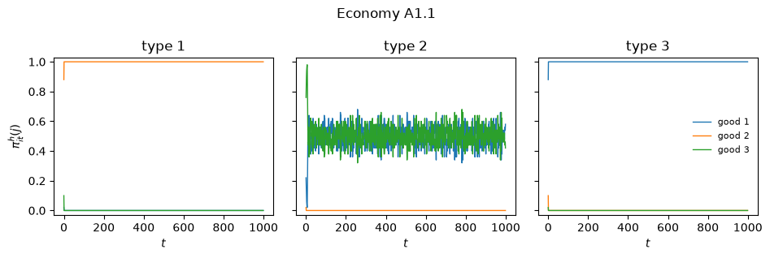
只有类型 2 的主体保留了任何随机性，其原因很有启发性：他们是把商品 1 用作货币的主体，因此他们持有哪种商品取决于他们在“获取货币、花费货币”这一循环中所处的位置。
现在让我们看看交易本身。
第 \(i\) 行第 \(j\) 列的条目是类型 \(i\) 的主体持有 \(j\)、遇到持有 \(k\) 的人并交易的频率在 \(k\) 上的三元组。
exchanges(sim_a11)
| good 1 | good 2 | good 3 | |
|---|---|---|---|
| type 1 | (0.00, 0.00, 0.00) | (0.15, 0.00, 0.00) | (0.00, 0.00, 0.00) |
| type 2 | (0.09, 0.15, 0.00) | (0.00, 0.00, 0.00) | (0.16, 0.00, 0.00) |
| type 3 | (0.00, 0.00, 0.16) | (0.00, 0.00, 0.00) | (0.00, 0.00, 0.00) |
交易模式作为图片会更容易阅读。
plot_flows(sim_a11, title="Economy A1.1: discovered exchange pattern")
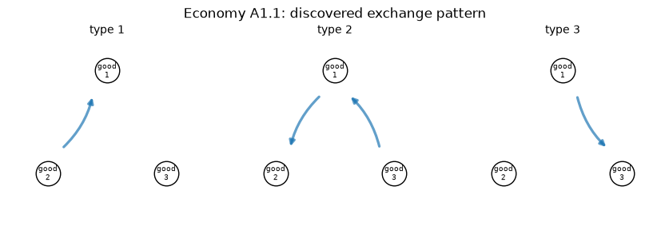
这正是基本均衡三角形：类型 1 放弃商品 2 换取商品 1，类型 3 放弃商品 1 换取商品 3，类型 2 完成两段流程，先放弃商品 3 换取商品 1，随后再放弃商品 1 换取商品 2。
商品 1 作为货币流通。
我们也可以问一问获胜规则在从未被访问的状态下会怎么做，这正是 Kiyotaki 和 Wright 的策略所规定的，也是论文所报告的内容。
winning_actions(sim_a11)
| good 1 | good 2 | good 3 | |
|---|---|---|---|
| type 1 | (0,0,0) | (1,0,0) | (1,0,0) |
| type 2 | (1,1,0) | (0,0,0) | (1,1,0) |
| type 3 | (0,0,1) | (0,0,0) | (0,0,0) |
阅读“type 1”行，“good 2” 列中的条目是三元组 \((\tilde\pi^e_1(21|2), \tilde\pi^e_1(22|2), \tilde\pi^e_1(23|2))\)。
一个持有商品 2 的类型 1 主体会接受商品 1，拒绝商品 3：他不进行投机。
最后，我们可以深入一个分类器系统内部，读出赢得竞争的规则。
strongest(sim_a11.agents[0].trade)
| classifier | strength | times used | |
|---|---|---|---|
| 0 | 0110 -> 1 | 30.04 | 8343 |
| 1 | 1010 -> 0 | 29.27 | 5 |
| 2 | 1001 -> 0 | 27.54 | 8 |
| 3 | 1000 -> 0 | 16.80 | 3 |
| 4 | 1001 -> 1 | 0.00 | 1 |
strongest(sim_a11.agents[0].consume)
| classifier | strength | times used | |
|---|---|---|---|
| 0 | 10 -> 1 | 66.20 | 8354 |
| 1 | 10 -> 0 | -0.10 | 2 |
| 2 | 0# -> 1 | -0.55 | 41625 |
| 3 | #0 -> 1 | -0.68 | 6 |
| 4 | 00 -> 1 | -0.75 | 3 |
对类型 1 主体而言，最强的交换规则是 0110 -> 1，即“如果我持有商品 2 (01)，我的伙伴持有商品 1 (10)，则交易”——而它被使用了数千次，而其余的对手规则则几乎从未被使用。
最强的消费规则是 10 -> 1：“如果我持有商品 1，就吃掉它”。
这正是论文所展示的、支持基本均衡的分类器 \(e^1_{2,1,1}\) 和 \(c^1_{1,1}\)。
88.6. 经济体 A2.1：当理论预测投机时#
经济体 A2 与 A1 唯一的区别在于 \(u_i = 500\) 而非 \(100\)。
这足以违反 Kiyotaki-Wright 不等式 (88.4)，因此对于耐心的主体来说，此时唯一的平稳理性预期均衡变成了投机均衡，在其中类型 1 主体预期能迅速将商品 3 换成商品 1，因而接受商品 3。
我们的适应性主体能找到它吗？
economy_a21 = Economy(
name='A2.1',
produces=np.array([1, 2, 0]),
storage_costs=np.array([0.1, 1.0, 20.0]),
u=500.0,
method='enumerate',
)
sim_a21 = Simulation(economy_a21, seed=42)
sim_a21.run(1000)
holdings(sim_a21)
| good 1 | good 2 | good 3 | |
|---|---|---|---|
| type 1 | 0.00 | 1.0 | 0.00 |
| type 2 | 0.53 | 0.0 | 0.47 |
| type 3 | 1.00 | 0.0 | 0.00 |
以下是 Kiyotaki-Wright 理论针对这些参数所预测的投机均衡，供比较。
speculative = pd.DataFrame([[0, 0.707, 0.293],
[0.586, 0, 0.414],
[1, 0, 0]],
index=type_names(economy_a21),
columns=good_names(economy_a21))
speculative
| good 1 | good 2 | good 3 | |
|---|---|---|---|
| type 1 | 0.000 | 0.707 | 0.293 |
| type 2 | 0.586 | 0.000 | 0.414 |
| type 3 | 1.000 | 0.000 | 0.000 |
答案是否定的。
模拟的持有量是基本均衡的持有量：类型 1 主体几乎总是持有商品 2，从不积累商品 3，而投机均衡则要求他们大约三成的时间持有商品 3。
值得深入探究其原因。
winning_actions(sim_a21)
| good 1 | good 2 | good 3 | |
|---|---|---|---|
| type 1 | (0,0,0) | (1,0,0) | (0,1,0) |
| type 2 | (1,1,0) | (0,0,0) | (1,1,0) |
| type 3 | (0,0,1) | (0,0,0) | (0,0,0) |
阅读“type 1”行、“good 2”列，获胜的交换规则拒绝商品 3：类型 1 主体不会进行投机性交换。
现在看看他们如果拿到商品 3 会怎么做。
consume_actions(sim_a21)
| good 1 | good 2 | good 3 | |
|---|---|---|---|
| type 1 | 1 | 1 | 1 |
| type 2 | 0 | 1 | 0 |
| type 3 | 1 | 1 | 1 |
strongest(sim_a21.agents[0].consume, n=4)
| classifier | strength | times used | |
|---|---|---|---|
| 0 | 10 -> 1 | 333.70 | 8161 |
| 1 | ## -> 1 | 0.17 | 41809 |
| 2 | 10 -> 0 | -0.10 | 2 |
| 3 | #0 -> 1 | -0.66 | 17 |
这正是论文的诊断，从输出中可以看到。
有一条消费规则 10 -> 1 是特定的，并且极其强：“如果我持有商品 1，就吃掉它”。
决定其他一切的规则是 ## -> 1——不管持有什么都吃掉——一条带两个通配符的最大程度泛化的规则，强度勉强高于零，但它却是匹配除“持有商品 1”之外任何状态的最强规则。
因此，一个获得商品 3 的类型 1 主体会立即消费掉它、获得零效用，而不是把它带着并换成商品 1。
正如论文所述，类型 1 主体获胜的消费分类器过于泛化——它们的 \(\#\) 太多，无法区分储藏的商品——因此类型 1 主体过度消费商品 3，使得能让投机变得有利可图的信息永远无法传到交换分类器那里。
作者的诊断值得引用：
耐心需要经验。 分类器系统内部的转移系统被设计为收敛到一组长期平均强度。在极限情况下，人工智能主体应该表现为长期平均收益最大化者……然而，最优规则要达到期望的强度需要时间。我们的人工智能主体在早期的行为可能非常短视……目前的算法似乎存在缺陷，即使在我们运行的长时间模拟中，它的实验也太少，不足以支持投机均衡。
在早期，在任何规则积累起有意义的平均值之前，主体的行为是短视的，而短视的主体永远不会接受昂贵的商品。
等到强度稳定下来时，其他所有人已经停止投机了，因此投机不再有利可图。
被选中的均衡是学习动态的结果，而不仅仅是收益本身的结果。
88.7. 经济体 B.1：一种不同的生产模式#
经济体 B 改变了生产技术——类型 1 生产商品 3，类型 2 生产商品 1，类型 3 生产商品 2——并将储藏成本压缩为 \(s = (1, 4, 9)\)，\(u_i = 100\)。
基本均衡和投机均衡都存在。
论文报告了一个引人注目的现象：在 \(t = 500\) 时经济体看起来像是投机均衡，但到 \(t = 1000\) 时它已经转向了基本均衡。
economy_b1 = Economy(
name='B.1',
produces=np.array([2, 0, 1]), # type 1 -> good 3, type 2 -> good 1, ...
storage_costs=np.array([1.0, 4.0, 9.0]),
u=100.0,
method='enumerate',
b_trade=(0.25, 0.25),
)
sim_b1 = Simulation(economy_b1, seed=42)
sim_b1.run(1000)
holdings(sim_b1, t=500)
| good 1 | good 2 | good 3 | |
|---|---|---|---|
| type 1 | 0.00 | 0.274 | 0.726 |
| type 2 | 1.00 | 0.000 | 0.000 |
| type 3 | 0.56 | 0.440 | 0.000 |
holdings(sim_b1)
| good 1 | good 2 | good 3 | |
|---|---|---|---|
| type 1 | 0.000 | 0.324 | 0.676 |
| type 2 | 1.000 | 0.000 | 0.000 |
| type 3 | 0.626 | 0.374 | 0.000 |
plot_holdings(sim_b1, title="Economy B.1")
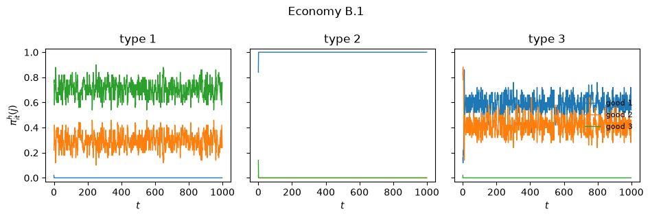
paper_b1 = np.array([[0.0, 0.28, 0.72], # the paper's table at t = 1000
[0.994, 0.0, 0.006],
[0.526, 0.474, 0.0]])
print(f"max |simulated - paper's table| = "
f"{np.abs(holdings(sim_b1).to_numpy() - paper_b1).max():.3f}")
max |simulated - paper's table| = 0.100
最终状态重现了论文的定性模式，最大的单个差异约为十分之一。
类型 2 主体总是持有商品 1，而类型 3 主体在商品 1 和他们自己生产的商品 2 之间分配持有量。
论文报告了我们这次运行没有重现的另一个特征。
在作者的模拟中，类型 3 主体在 \(t = 500\) 时以概率一持有商品 2——拒绝了更便宜的商品 1，这是投机模式——直到后来才转向商品 1：
经济体 B.1 展现出一个有趣的演化模式。在第 500 次迭代时，持有量分布，尤其是交易模式，对应于投机均衡。然而，经济体后来逐渐远离这一状态，到第 1000 次迭代时已经实际上收敛到了基本均衡。
在我们的实现中，这一转变发生在最初的五十期以内，因此投机阶段在 \(t = 500\) 之前就已经结束。
暂态显然对实现细节非常敏感，而极限情况则并非如此。
不过，作者观察到的经济学原理仍然值得说明，因为它关系到我们该如何理解经济体 A2。
在那里，人们可能会怀疑基本均衡的被选中仅仅是因为短视的主体从一开始就拒绝昂贵的商品。
而在经济体 B 中，系统一开始就处于投机模式，随着强度的积累却远离了它，这表明基本均衡的选择是学习动态所做出的行为，而不仅仅是初始条件的产物。
plot_flows(sim_b1, title="Economy B.1: discovered exchange pattern")
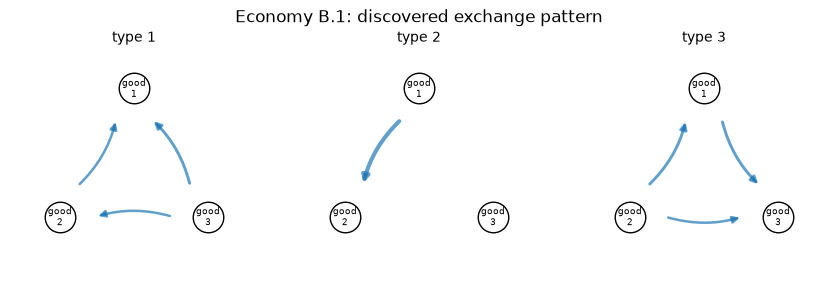
88.8. 遗传算法#
完全枚举之所以可行，只是因为 Kiyotaki-Wright 的状态空间很小。
在任何更大的问题中，所有可想象的规则的列表太长而无法维护，主体必须转而使用一个持续修订的有限规则种群。
Marimon、McGrattan 和 Sargent 为这种情形添加了四种操作。
创造和多样化我们已经实现；它们处理未预见的状态，并保证两种动作都会被尝试。
对于五种商品的经济体，我们将使用一种多样化的变体，即用相反的动作克隆获胜规则，从而保留获胜者的泛化水平，而不是制造一条完全特定的规则。
def diversify_clone(rules, matches, winner, ufitness=0.5):
"Copy the winner with the opposite action over a rarely used rule."
if len(set(rules.action[matches])) > 1:
return
losers = np.flatnonzero(rules.used / (rules.used.max() + 1) < ufitness)
if losers.size == 0:
return
j = losers[np.argmin(rules.strength[losers])]
rules.replace(j, rules.cond[winner].copy(), 1 - rules.action[winner],
rules.strength[winner], used=rules.used[winner])
特殊化将通配符转变为特定的比特，因此一直服务于多个状态的规则可以分裂出自身更尖锐的版本。
它以随时间下降的概率 \(f_s(t) = 1/(2\sqrt{t})\) 被调用：实验在早期便宜，在后期则昂贵。
def specialize_all(rules, t, rng):
"Replace each wildcard by a bit with probability 1 / (2 sqrt(t))."
hit = (rules.cond == WILD) & (rng.random(rules.cond.shape)
< 1.0 / (2.0 * np.sqrt(t)))
if hit.any():
rules.cond[hit] = rng.integers(0, 2, size=hit.sum())
def specialize_winner(rules, winner, pmutation, rng, ufitness=0.5):
"Plant a sharpened copy of a heavily used winner over a rarely used rule."
cond = rules.cond[winner]
if not np.any(cond == WILD):
return
if rules.used[winner] / (rules.used.max() + 1) <= ufitness:
return
pick = (cond == WILD) & (rng.random(cond.shape) < pmutation)
losers = np.flatnonzero(rules.used / (rules.used.max() + 1) < ufitness)
if not pick.any() or losers.size == 0:
return
j = losers[np.argmin(rules.strength[losers])]
new = cond.copy()
new[pick] = rng.integers(0, 2, size=pick.sum())
rules.replace(j, new, rules.action[winner], rules.strength[winner],
used=rules.used[winner])
泛化是真正的遗传算法。
强度弱或很少被使用的规则会成为被替换的候选。
父本以两个阶段抽取——首先是按照规则被使用的频率进行加权的一个子集，然后在该子集中根据强度进行轮盘赌选择——这样一条规则必须既成功又相关才能繁殖。
两个子代通过交叉，以及在 'ga3' 变体中通过变异形成。
然后每个子代取代它在可替换规则中最相似的那条规则，这种手段被称为拥挤(crowding)，它通过让子代与自己的同类竞争来保持多样性。
'ga4' 变体用一种泛化交叉取代了单点交叉：在一个随机抽取的区间内，父本不一致的位置会变成通配符。
这正是论文第 6 节所描述、其图 5 所展示的算子，它制造出泛化的规则，而不是重组特定的规则。
def roulette(weights, rng):
total = weights.sum()
if total <= 0:
return int(rng.integers(0, len(weights)))
return int(np.searchsorted(np.cumsum(weights), rng.random() * total))
def crowding_victim(rules, cond, action, cankill, rng, crowd_factor, crowd_subpop):
"De Jong crowding: the child displaces the replaceable rule it resembles most."
size = max(1, int(crowd_subpop * len(cankill)))
best, best_sim = cankill[0], -1
for _ in range(crowd_factor):
pool = (cankill if size >= len(cankill)
else list(rng.choice(cankill, size=size, replace=False)))
cand = min(pool, key=lambda i: rules.strength[i])
sim = (np.count_nonzero(cond == rules.cond[cand])
+ (action != rules.action[cand]))
if sim > best_sim:
best, best_sim = cand, sim
return best
def genetic_algorithm(rules, rng, generalize=False, pcross=0.6, pmutation=0.01,
propselect=0.2, propused=0.7, crowd_factor=8,
crowd_subpop=0.5, uratio=(0.0, 0.2)):
n, L = rules.n, rules.length
if n < 4:
return
# rules that are weak or seldom used may be replaced
max_used = max(rules.used.max() + (1 if generalize else 0), 1)
cankill = list(np.flatnonzero((rules.strength < uratio[0]) |
(rules.used / max_used < uratio[1])))
if not cankill:
return
fitness = rules.strength - min(rules.strength.min(), 0.0) + 1e-6
n_pairs = min(max(1, round(propselect * n * 0.5)), (len(cankill) + 1) // 2)
n_called = int(propused * n)
for _ in range(n_pairs):
if not cankill:
break
# stage 1: pre-select a pool with probability proportional to usage
if n_called < n:
avail = rules.used.astype(float) + 1.0
pool = []
for _ in range(n_called):
if avail.sum() <= 0:
break
k = roulette(avail, rng)
pool.append(k)
avail[k] = 0.0
if len(pool) < 2:
pool = list(range(n))
else:
pool = list(range(n))
pool = np.array(pool)
# stage 2: roulette wheel on fitness within the pool
mum, dad = pool[roulette(fitness[pool], rng)], pool[roulette(fitness[pool], rng)]
kids = [rules.cond[mum].copy(), rules.cond[dad].copy()]
acts = [rules.action[mum], rules.action[dad]]
avg = 0.5 * (rules.strength[mum] + rules.strength[dad])
if generalize:
# two-point crossover in which disagreements become wildcards
lo, hi = np.sort(rng.integers(0, L + 1, size=2))
inside = rng.random() > 0.5
region = (np.arange(lo, hi) if inside else
np.concatenate([np.arange(0, lo), np.arange(hi, L)]))
for j in region:
a, b = kids[0][j], kids[1][j]
if a >= 0 and b >= 0 and a != b:
kids[0][j] = kids[1][j] = WILD
else:
# single-point crossover with ternary mutation
jc = 1 + int((L - 1) * rng.random()) if rng.random() < pcross else L
kids = [np.concatenate([rules.cond[mum][:jc], rules.cond[dad][jc:]]),
np.concatenate([rules.cond[dad][:jc], rules.cond[mum][jc:]])]
for k in range(2):
flip = rng.random(L) < pmutation
if flip.any():
shift = rng.integers(1, 3, size=flip.sum())
kids[k][flip] = ((kids[k][flip] + 1 + shift) % 3) - 1
if rng.random() < pmutation:
acts[k] = 1 - acts[k]
for k, parent in zip(range(2), (mum, dad)):
if not cankill:
break
j = crowding_victim(rules, kids[k], acts[k], cankill, rng,
crowd_factor, crowd_subpop)
rules.replace(j, kids[k], acts[k], avg,
used=rules.used[parent], traded=rules.traded[parent])
cankill.remove(j)
88.9. 经济体 A1.2：从随机规则中学习#
经济体 A1.2 的参数与 A1.1 相同，但主体现在从随机抽取的 72 条交换规则和 12 条消费规则开始。
这些规则中的大多数都是无意义的，也不能保证种群中甚至包含支持某个均衡所需的规则。
遗传算子必须制造出这些规则。
economy_a12 = Economy(
name='A1.2',
produces=np.array([1, 2, 0]),
storage_costs=np.array([0.1, 1.0, 20.0]),
u=100.0,
method='ga3',
)
sim_a12 = Simulation(economy_a12, seed=2)
sim_a12.run(2000, verbose=True)
period 200: trades = 33, consumptions = 14
period 400: trades = 4, consumptions = 0
period 600: trades = 37, consumptions = 18
period 800: trades = 44, consumptions = 0
period 1000: trades = 30, consumptions = 15
period 1200: trades = 32, consumptions = 17
period 1400: trades = 31, consumptions = 14
period 1600: trades = 48, consumptions = 17
period 1800: trades = 40, consumptions = 41
period 2000: trades = 63, consumptions = 41
holdings(sim_a12, t=1000)
| good 1 | good 2 | good 3 | |
|---|---|---|---|
| type 1 | 0.0 | 1.0 | 0.0 |
| type 2 | 0.0 | 0.0 | 1.0 |
| type 3 | 1.0 | 0.0 | 0.0 |
holdings(sim_a12)
| good 1 | good 2 | good 3 | |
|---|---|---|---|
| type 1 | 0.000 | 1.0 | 0.000 |
| type 2 | 0.478 | 0.0 | 0.522 |
| type 3 | 1.000 | 0.0 | 0.000 |
plot_holdings(sim_a12, title="Economy A1.2")
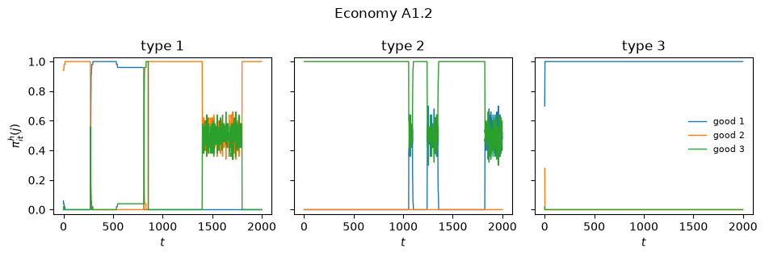
再次达到了基本均衡，尽管这需要花费明显更长的时间，且早期的转变过程比完全枚举时要杂乱得多。
让我们看看哪些规则存活了下来。
strongest(sim_a12.agents[0].trade, n=6)
| classifier | strength | times used | |
|---|---|---|---|
| 0 | 0110 -> 1 | 30.20 | 15642 |
| 1 | 1010 -> 1 | 28.19 | 32 |
| 2 | 0010 -> 1 | 27.74 | 7933 |
| 3 | 1010 -> 1 | 27.41 | 32 |
| 4 | 0110 -> 1 | 27.41 | 6422 |
| 5 | 1010 -> 1 | 27.05 | 32 |
种群已经收敛到几乎完全一样的单一规则的复制品上。
0110 -> 1——“持有商品 2，遇到商品 1，交易”——正是完全枚举在经济体 A1.1 中所选出的规则，但在这里遗传算法不得不构建出它，现在种群中有好几份该规则的副本。
其他条目则是它的后代：0111 -> 1 有相同的自身持有条件，但伙伴条件为 11，这不是任何一种商品的编码，因此该规则永远无法触发。
它之所以携带高强度和大使用计数，只是因为子代同时继承了父代的强度和使用计数。
plot_flows(sim_a12, title="Economy A1.2: discovered exchange pattern")
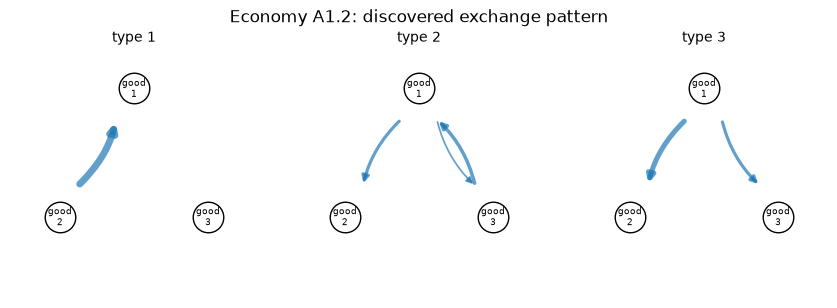
警告
收敛并不能保证每次运行都会发生。
在随机初始规则的情况下，种群有时会未能在 2000 期内制造出支持基本均衡所需的规则，经济体就会陷入几乎没有交易的模式。
尝试更改上面的种子来观察这一点。
论文明确指出，该算法的“实验太少”，改进它是未完成的工作。
88.10. 经济体 C：法定货币#
现在添加第四种物品，商品 0，它满足
储藏无成本，\(s_0 = 0\)；
对任何人都不产生效用；且
不能被消费。
它本质上是毫无价值的。
它是通过在 \(t = 0\) 时将 48 个单位交给 48 个随机选出的主体来引入的，商品的储藏成本被提高到 \(s = (9, 14, 29)\)，使得没有一种商品的储藏成本能接近货币那么低。
如果这样的商品流通起来，那只能是因为主体已经发现其他主体会接受它。
economy_c = Economy(
name='C',
produces=np.array([1, 2, 0]),
storage_costs=np.array([9.0, 14.0, 29.0, 0.0]), # last good is fiat money
u=100.0,
method='ga3',
n_trade_rules=150,
n_consume_rules=20,
b_consume=(0.025, 0.25),
n_fiat=48,
start='production',
)
sim_c = Simulation(economy_c, seed=2)
sim_c.run(2000, verbose=True)
period 200: trades = 53, consumptions = 32
period 400: trades = 35, consumptions = 29
period 600: trades = 61, consumptions = 40
period 800: trades = 53, consumptions = 26
period 1000: trades = 50, consumptions = 37
period 1200: trades = 49, consumptions = 32
period 1400: trades = 45, consumptions = 23
period 1600: trades = 55, consumptions = 38
period 1800: trades = 63, consumptions = 36
period 2000: trades = 52, consumptions = 26
holdings(sim_c, t=750)
| good 1 | good 2 | good 3 | fiat | |
|---|---|---|---|---|
| type 1 | 0.000 | 0.514 | 0.212 | 0.274 |
| type 2 | 0.228 | 0.000 | 0.318 | 0.454 |
| type 3 | 0.768 | 0.000 | 0.000 | 0.232 |
holdings(sim_c, t=1250)
| good 1 | good 2 | good 3 | fiat | |
|---|---|---|---|---|
| type 1 | 0.000 | 0.782 | 0.000 | 0.218 |
| type 2 | 0.242 | 0.000 | 0.388 | 0.370 |
| type 3 | 0.628 | 0.000 | 0.000 | 0.372 |
与论文在 \(t = 1250\) 时的表格进行比较，其中各列为（商品 1、商品 2、商品 3、法定货币）：类型 1 为 \((0, 0.54, 0, 0.46)\)，类型 2 为 \((0.18, 0, 0.53, 0.28)\)，类型 3 为 \((0.77, 0, 0, 0.21)\)。
每种类型都在相当一部分时间里持有法定货币。
plot_holdings(sim_c, title="Economy C: fiat money")
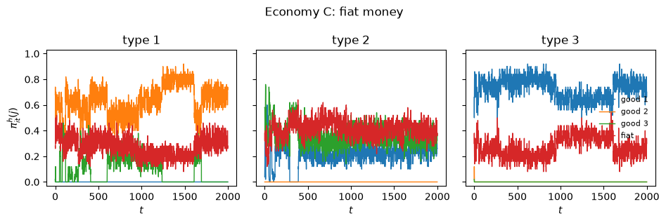
plot_flows(sim_c, title="Economy C: discovered exchange pattern")
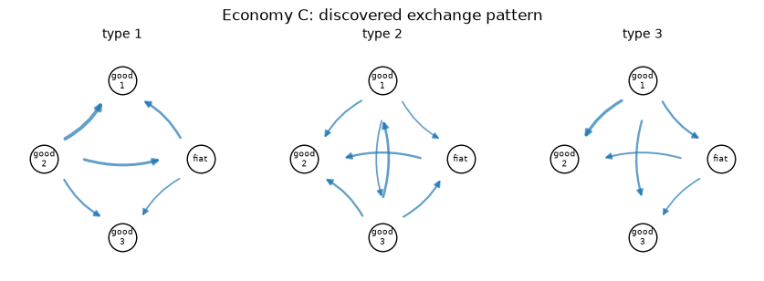
winning_actions(sim_c)
| good 1 | good 2 | good 3 | fiat | |
|---|---|---|---|---|
| type 1 | (1,-,-,-) | (1,1,1,1) | (1,-,-,-) | (1,0,1,1) |
| type 2 | (1,1,1,1) | (-,1,-,1) | (1,1,1,1) | (0,1,0,1) |
| type 3 | (1,1,1,1) | (-,-,1,-) | (-,-,1,-) | (0,1,1,1) |
进出法定货币节点的箭头显示了每种类型都在双向进行货币的转手：主体放弃商品以获取货币，也放弃货币以获取他们消费的商品。
环境中没有任何东西告诉他们这样做。
每个主体只是发现，最终持有那种无成本物品的规则比不这样做的规则赚得更多——而由于所有人都在同时发现这一点，这种信念变得自我实现。
这是一种真正的社会性安排，由那些个体上对它一无所知的主体所构建。
88.11. 经济体 D：五种商品，五种类型#
最后一个经济体有五种类型和五种商品，生产模式为
类型 \(i\) |
生产 |
消费 |
|---|---|---|
1 |
商品 3 |
商品 1 |
2 |
商品 4 |
商品 2 |
3 |
商品 5 |
商品 3 |
4 |
商品 1 |
商品 4 |
5 |
商品 2 |
商品 5 |
储藏成本 \(s = (1, 4, 9, 16, 30)\)，\(u_i = 200\)。
商品现在用三位编码，每个主体携带 180 条交换规则和 20 条消费规则——这只是可能规则中的一小部分，因此遗传算法是必不可少的。
作者强调，在运行之前，他们对这个经济体没有解析的均衡刻画。
模拟被用作一种发现均衡可能是什么样子的装置，之后可以对其进行解析验证。
economy_d = Economy(
name='D',
produces=np.array([2, 3, 4, 0, 1]), # type 1 -> good 3, type 2 -> good 4, ...
storage_costs=np.array([1.0, 4.0, 9.0, 16.0, 30.0]),
u=200.0,
method='ga4',
n_trade_rules=180,
n_consume_rules=20,
start='production',
)
sim_d = Simulation(economy_d, seed=3)
sim_d.run(2000, verbose=True)
period 200: trades = 41, consumptions = 21
period 400: trades = 65, consumptions = 26
period 600: trades = 38, consumptions = 22
period 800: trades = 28, consumptions = 20
period 1000: trades = 36, consumptions = 26
period 1200: trades = 42, consumptions = 13
period 1400: trades = 34, consumptions = 5
period 1600: trades = 36, consumptions = 25
period 1800: trades = 34, consumptions = 19
period 2000: trades = 40, consumptions = 23
holdings(sim_d, t=500)
| good 1 | good 2 | good 3 | good 4 | good 5 | |
|---|---|---|---|---|---|
| type 1 | 0.000 | 0.000 | 0.972 | 0.012 | 0.016 |
| type 2 | 0.274 | 0.000 | 0.504 | 0.212 | 0.010 |
| type 3 | 0.000 | 0.000 | 0.000 | 0.000 | 1.000 |
| type 4 | 0.994 | 0.000 | 0.006 | 0.000 | 0.000 |
| type 5 | 0.972 | 0.024 | 0.000 | 0.004 | 0.000 |
holdings(sim_d)
| good 1 | good 2 | good 3 | good 4 | good 5 | |
|---|---|---|---|---|---|
| type 1 | 0.0 | 0.588 | 0.324 | 0.008 | 0.080 |
| type 2 | 0.0 | 0.000 | 0.062 | 0.926 | 0.012 |
| type 3 | 0.0 | 0.170 | 0.000 | 0.074 | 0.756 |
| type 4 | 1.0 | 0.000 | 0.000 | 0.000 | 0.000 |
| type 5 | 0.0 | 0.952 | 0.046 | 0.002 | 0.000 |
plot_holdings(sim_d, title="Economy D: five goods, five types")
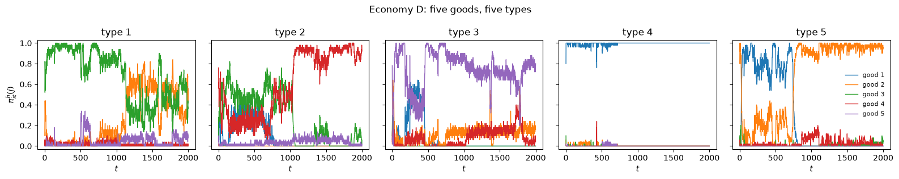
有两个特征引人注目。
第一，对角线为零：没有一种类型会在一期结束时持有它所消费的商品，因为它把它消费掉了。
第二，每种类型都会积累自己的生产商品，以及比它更便宜储藏的商品，从不积累更昂贵的商品。
例如，类型 3 生产商品 5，即经济体中最昂贵的商品，只有部分时间持有它，因为已经将其中一部分换成了便宜得多的商品 2。
类型 4 生产商品 1，即所有商品中最便宜的，就干脆持有它。
让我们对实际发生的交易进行分类。
def trade_composition(sim, window=200):
"""
Classify realized trades by what the agent acquires: its own consumption
good, a good that is cheaper to store than the one given up, or neither.
"""
econ = sim.econ
f = np.array(sim.exch_hist)[-window:].sum(axis=0)
s = econ.storage_costs
counts = {'own consumption good': 0.0, 'a cheaper good': 0.0, 'neither': 0.0}
for i in range(econ.n_types):
for j in range(econ.n_goods):
for k in range(econ.n_goods):
if j == k:
continue
key = ('own consumption good' if k == i else
'a cheaper good' if s[k] < s[j] else 'neither')
counts[key] += f[i, j, k]
total = sum(counts.values())
return pd.Series({k: round(v / total, 3) for k, v in counts.items()},
name='share of realized trades')
trade_composition(sim_d)
own consumption good 0.364
a cheaper good 0.301
neither 0.335
Name: share of realized trades, dtype: float64
大约三分之二的实际交易获取的要么是主体自己的消费商品，要么是储藏成本更便宜的商品，这与论文所描述的模式一致。
剩下的三分之一值得评论，因为它并非反对该模式的证据。
考虑一个类型 1 主体，他生产商品 3，用其换取贵得多的商品 5。
然后他消费商品 5——从中获得零效用——再次生产商品 3，因此他在期末仍持有商品 3、支付 \(s_3\)，与他拒绝交易的情形完全相同。
这类交易在收益上是中性的，因此记账系统中没有任何东西会把产生这些交易的规则挤出种群。
plot_flows(sim_d, window=200, cutoff=0.03,
title="Economy D: discovered exchange pattern")
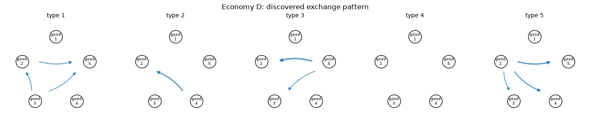
论文对这些模式所做的总结是：
从模拟结果可以看到，交易模式几乎描绘出一个基本均衡的样子，主体只愿意为储藏成本低于当前所储藏商品的商品进行交易，除非它们总是接受本类型的商品。可以检测到一些投机性的举动。
一个这样的投机性举动的例子是，类型 2 主体接受商品 3 换取商品 1，并非因为商品 3 便宜，而是因为类型 3 主体会用商品 2 来换取它。
88.12. 结束语#
Marimon、McGrattan 和 Sargent 的主体知道得很少。
他们不知道自己的效用函数，不知道储藏成本，不知道商品在人群中的分布，当然也不求解动态规划问题。
他们只是在体验效用时认出它，在承担成本时认出它，并保留滚动平均值。
从中产生了以下结果：
纳什-马尔可夫行为是可学习的。 在所模拟的大多数经济体中，持有量和交易模式都收敛到 Kiyotaki-Wright 模型的一个平稳纳什均衡。
学习在均衡之间做出选择。 在理性预期模型同时容许基本均衡和投机均衡的地方，分类器系统总是找到基本均衡。
经济体 A2 表明，即使理论指出对于耐心的主体来说，该均衡本不该成立，它们仍能找到它。
经济体 B 表明这并非仅仅是早期的短视，因为该经济体随着学习远离了投机模式。
制度是可以被发现的。 经济体 C 的主体仅凭他们自己对储藏成本的体验，就建立起了一套法定货币体系。
该方法具有可扩展性。 经济体 D 在其作者尚未求解的模型中产生了一个可信的均衡描述。
论文对缺失之处很坦诚。
没有收敛定理，只有对随机逼近论证如何能够提供收敛定理的一个概述；作者判断自己的遗传算法提供的“实验太少”——而这正是投机均衡从未出现的原因。
这一诊断——即适应性系统对均衡的选择是由它探索的多少和何时探索所支配的——已被证明是经久不衰的。
88.13. 练习#
练习 88.1
经济体 A2.2 就是经济体 A2——\(u_i = 500\)——但从随机生成的规则开始，并用 'ga3' 遗传算法进行演化，正如 A1.2 之于 A1.1 的关系一样。
论文的总结表将其均衡类型列为投机型，作者报告说在 1000 次迭代之后经济体尚未收敛，\(t = 1000\) 时的交易模式比 \(t = 500\) 时更接近基本均衡。
将其模拟 2000 期，并报告 \(t = 500\)、\(t = 1000\) 和 \(t = 2000\) 时的持有量。
遗传算法提供的额外实验是否会产生投机？
解答 练习 88.1
economy_a22 = Economy(
name='A2.2',
produces=np.array([1, 2, 0]),
storage_costs=np.array([0.1, 1.0, 20.0]),
u=500.0,
method='ga3',
)
sim_a22 = Simulation(economy_a22, seed=3)
sim_a22.run(2000)
for t in (500, 1000, 2000):
print(f"\nt = {t}")
print(holdings(sim_a22, t=t))
t = 500
good 1 good 2 good 3
type 1 0.00 1.0 0.00
type 2 0.47 0.0 0.53
type 3 1.00 0.0 0.00
t = 1000
good 1 good 2 good 3
type 1 0.000 1.0 0.000
type 2 0.492 0.0 0.508
type 3 1.000 0.0 0.000
t = 2000
good 1 good 2 good 3
type 1 0.000 1.0 0.000
type 2 0.494 0.0 0.506
type 3 1.000 0.0 0.000
plot_holdings(sim_a22, title="Economy A2.2")
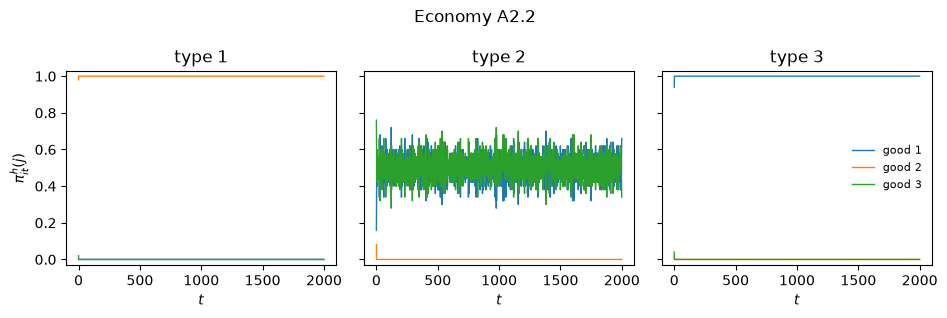
经济体再次落定在基本模式上：类型 1 持有商品 2，类型 3 持有商品 1，类型 2 在商品 1 和商品 3 之间交替。
类型 1 主体并未持有商品 3，因此他们没有进行投机。
将初始规则随机化并让遗传算法运行本身并不能产生足够的实验来维持投机——这正是论文自己的结论。
练习 88.2
经济体 B.2 是从随机规则出发、使用 'ga3' 遗传算法的经济体 B。
论文报告说它“在 2000 期后仍未收敛”，但正“朝着基本均衡移动”，在 \(t = 2000\) 时的持有量为：类型 1 为 \((0, 0.354, 0.646)\)，类型 2 为 \((0.996, 0, 0.004)\)，类型 3 为 \((0.268, 0.732, 0)\)。
对其进行模拟，并与我们上面运行的完全枚举经济体 B.1 进行比较。
解答 练习 88.2
economy_b2 = Economy(
name='B.2',
produces=np.array([2, 0, 1]),
storage_costs=np.array([1.0, 4.0, 9.0]),
u=100.0,
method='ga3',
)
sim_b2 = Simulation(economy_b2, seed=1)
sim_b2.run(2000)
for t in (500, 1000, 2000):
print(f"B.2 at t = {t}")
print(holdings(sim_b2, t=t))
print()
print("B.1 (complete enumeration) at t = 1000, for comparison")
print(holdings(sim_b1))
B.2 at t = 500
good 1 good 2 good 3
type 1 0.000 0.304 0.696
type 2 0.676 0.000 0.324
type 3 0.336 0.664 0.000
B.2 at t = 1000
good 1 good 2 good 3
type 1 0.000 0.252 0.748
type 2 1.000 0.000 0.000
type 3 0.506 0.494 0.000
B.2 at t = 2000
good 1 good 2 good 3
type 1 0.000 0.262 0.738
type 2 1.000 0.000 0.000
type 3 0.472 0.528 0.000
B.1 (complete enumeration) at t = 1000, for comparison
good 1 good 2 good 3
type 1 0.000 0.324 0.676
type 2 1.000 0.000 0.000
type 3 0.626 0.374 0.000
plot_holdings(sim_b2, title="Economy B.2")
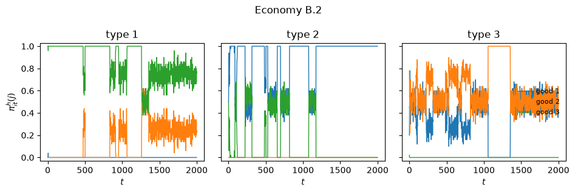
跟踪那两种发生变化的类型。
类型 2 主体在 \(t = 500\) 时仍然是分裂的，到 \(t = 1000\) 时已经锁定在商品 1 上。
类型 3 主体一开始主要持有他们自己的生产商品 2，在同一区间内将相当一部分持有量转移到了更便宜的商品 1 上，这正是论文所描述的朝向基本均衡的移动。
在那之后，类型 3 的分裂比例不再朝一个方向移动，而是从一次读数到下一次读数在半分状态附近徘徊，因此这个经济体没有像 B.1 那样收敛。
这正是论文对它自己的判断。
与完全枚举的运行相比，遗传算法使类型 1 和类型 2 达到了大致相同的位置，但类型 3 的进展要落后得多。
从随机材料中构建所需的规则要花费时间，而枚举经济体从不需要花费这些时间。
练习 88.3
出价函数 \(b_1(e) = b_{11} + b_{12}\sigma_e\) 偏向特定规则而非泛化规则，因为 \(\sigma_e\) 随通配符数量的增加而下降。
如果去掉这种倾向会发生什么？
将 \(b_{12} = 0\)，保持 \(b_{11} + b_{12}\) 固定为 \(0.05\)，重新运行经济体 A1.1，并将获胜规则中的通配符数量与基准情形进行比较。
单次运行不足以解决这个问题，因此要在多个种子上取平均值。
解答 练习 88.3
economy_flat = Economy(
name='A1.1 with no specificity premium',
produces=np.array([1, 2, 0]),
storage_costs=np.array([0.1, 1.0, 20.0]),
u=100.0,
method='enumerate',
b_trade=(0.05, 0.0),
)
sim_flat = Simulation(economy_flat, seed=42)
sim_flat.run(1000)
print(holdings(sim_flat))
good 1 good 2 good 3
type 1 0.00 1.0 0.00
type 2 0.53 0.0 0.47
type 3 1.00 0.0 0.00
持有量没有变化：无论哪种方式都能达到基本均衡。
发生变化的是到达那里的规则种类。
def wildcards_in_winners(sim):
"Average number of wildcards in the exchange rule that wins in each state."
econ = sim.econ
counts = []
for A in sim.agents:
for j in range(econ.n_goods):
for k in range(econ.n_goods):
w, _ = auction(A.trade, np.concatenate([econ.code(j), econ.code(k)]))
if w >= 0:
counts.append(np.count_nonzero(A.trade.cond[w] == WILD))
return np.mean(counts)
def average_wildcards(b_trade, seeds=range(8)):
out = []
for seed in seeds:
econ = Economy(name='sweep', produces=np.array([1, 2, 0]),
storage_costs=np.array([0.1, 1.0, 20.0]), u=100.0,
method='enumerate', b_trade=b_trade)
sim = Simulation(econ, seed=seed)
sim.run(1000)
out.append(wildcards_in_winners(sim))
return np.array(out)
base = average_wildcards((0.025, 0.025))
flat = average_wildcards((0.05, 0.0))
pd.DataFrame({"baseline $b_{12} = 0.025$": base.round(2),
"no premium $b_{12} = 0$": flat.round(2)},
index=pd.Index(range(8), name="seed"))
| baseline $b_{12} = 0.025$ | no premium $b_{12} = 0$ | |
|---|---|---|
| seed | ||
| 0 | 0.30 | 0.19 |
| 1 | 0.00 | 0.00 |
| 2 | 0.19 | 0.30 |
| 3 | 0.33 | 0.33 |
| 4 | 0.22 | 0.41 |
| 5 | 0.07 | 0.22 |
| 6 | 0.07 | 0.11 |
| 7 | 0.22 | 0.37 |
print(f"mean wildcards, baseline : {base.mean():.3f}")
print(f"mean wildcards, no specificity bid : {flat.mean():.3f}")
print(f"higher without the premium in {np.sum(flat > base)} of {len(base)} seeds")
mean wildcards, baseline : 0.176
mean wildcards, no specificity bid : 0.241
higher without the premium in 5 of 8 seeds
去掉特殊性溢价会提高获胜规则的平均泛化程度，但这一效应并不明显，也并非每次运行都会出现。
这一点值得了解，而不是被一带而过。
在完全枚举的情形下，特定规则从一开始就已全部存在并自行积累强度，因此出价溢价只是使拍卖倾向于它们的诸多力量之一；这种反作用是在平均值中可见的一种真实倾向，而不是每次运行都必然遵守的定律。
这种倾向在更难被察觉的地方反而影响更大。
正是论文归咎于经济体 A2 失败的机制：泛化的消费分类器无法区分储藏的商品，因此它们无法向交换分类器传递能使投机变得有利可图的信息。